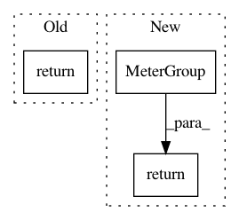

e15f4c77a6bb1f95a0f6477f0f87469fefb546b3,nilmtk/metergroup.py,MeterGroup,mains,#MeterGroup#,303
Before Change
graph = self.wiring_graph()
mains = tree_root(graph)
assert isinstance(mains, ElecMeter), type(mains)
return mains
def meters_directly_downstream_of_mains(self):
meters = nodes_adjacent_to_root(self.wiring_graph())
assert isinstance(meters, list)
After Change
elif n_site_meters == 1:
return site_meters[0]
else:
return MeterGroup(meters=site_meters)
def meters_directly_downstream_of_mains(self):
meters = nodes_adjacent_to_root(self.wiring_graph())
assert isinstance(meters, list)
In pattern: SUPERPATTERN
Frequency: 3
Non-data size: 3
Instances
Project Name: nilmtk/nilmtk
Commit Name: e15f4c77a6bb1f95a0f6477f0f87469fefb546b3
Time: 2014-07-08
Author: jack-list@xlk.org.uk
File Name: nilmtk/metergroup.py
Class Name: MeterGroup
Method Name: mains
Project Name: nilmtk/nilmtk
Commit Name: c88b9dc3f08c00afc45b2e2e195d955c43f5923d
Time: 2014-07-11
Author: jack-list@xlk.org.uk
File Name: nilmtk/metergroup.py
Class Name: MeterGroup
Method Name: submeters
Project Name: nilmtk/nilmtk
Commit Name: 8a5013ce5cef105bed8341bc043c97cd803cd233
Time: 2014-12-18
Author: jack-list@xlk.org.uk
File Name: nilmtk/metergroup.py
Class Name: MeterGroup
Method Name: from_other_metergroup